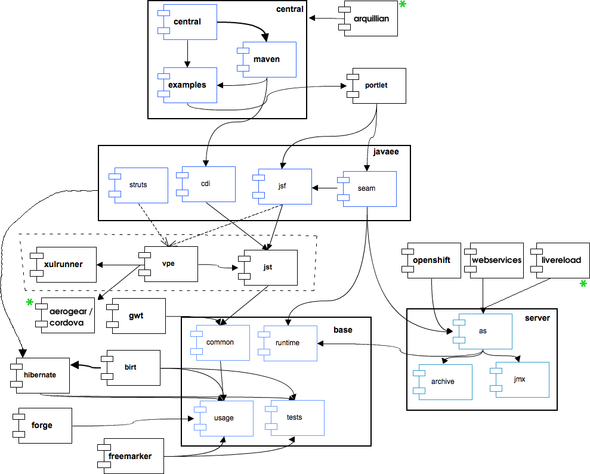

Build Job Swimlanes, JBoss Tools 4.1 |
||
| JBoss Tools Project | Depends On | |
| Arquillian * | Central, Portlet, JavaEE, VPE, XulRunner, JST, Server, Base | |
| Central | Portlet, JavaEE, VPE, XulRunner, JST, Server, Base | |
| Portlet | JavaEE, VPE, XulRunner, JST, Server, Base | |
| JavaEE | VPE, XulRunner, JST, Server, Hibernate, Base | |
| VPE | Aerogear *, XulRunner, JST, Server, Base | |
| Aerogear / Cordova * | -- | |
| XulRunner | -- | |
| JST | Server *, Base | |
| LiveReload * | Server, Base | |
| OpenShift | Server, Base | |
| WebServices | Server, Base | |
| BIRT | Hibernate, Base | |
| Hibernate | Base | |
| Server | Base | |
| GWT | Base | |
| Forge | Base | |
| Freemarker | Base | |
| Base | -- | |
| JBTIS Project | Depends On | |
| BPEL | Server, Base | |
| ESB | Base | |
| JBPM | Base | |
* - JST does not actually depend on Server, but in order to prevent the same dependency chain from appearing more than once (JavaEE -> Base, JST -> Base) and causing duplicate GAVs in the Tycho/Maven reactor, bootstrap profiles are as noted above. | ||

* - Indicates a change compared to previous release (eg., new project, new dependency)
Old swimlanes:
JBT 4.0 (Github) :: JBT 3.2 - 4.0 (SVN)